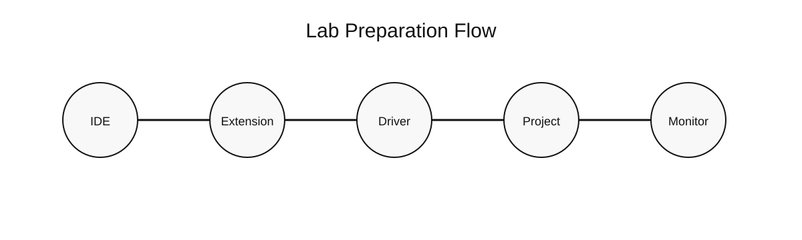

Thực hành sample và checklist kiểm tra
Tài liệu hướng dẫn mở sample, nạp code, theo dõi serial monitor và xử lý các lỗi thường gặp đối với ESP32 DevKit và STM32F103C8T6
| Đơn vị | Z Lab VN |
| Phân loại | NỘI BỘ |
| Phiên bản | 1.0 |
| Ngày cập nhật | 08/04/2026 |
| 1. Mục đích sử dụng | Mở đầu |
| 2. Danh mục sample project | Phần I |
| 3. Quy trình thực hành với ESP32 | Phần II |
| 4. Quy trình thực hành với STM32 | Phần III |
| 5. Checklist kiểm tra và xử lý lỗi | Phần IV |
| 6. Mẫu biên bản test tối thiểu | Phần cuối |
1. Mục đích sử dụng
Tài liệu này được dùng để hướng dẫn thao tác thực hành trực tiếp trên các sample project đi kèm trong thư mục Embedded/samples.
Mục tiêu của tài liệu là giúp người học kiểm tra được môi trường cài đặt, quy trình nạp code, việc nhận cổng kết nối và khả năng theo dõi log của phần cứng trong điều kiện thực tế.
2. Danh mục sample project
| Tên sample | Mục tiêu |
|---|---|
| samples/esp32-blink-pio | Kiểm tra build, upload, LED và serial monitor cơ bản cho ESP32 |
| samples/esp32-wifi-scan-pio | Kiểm tra stack Wi-Fi, quét mạng và đọc log RSSI trên ESP32 |
| samples/stm32-blink-pio | Kiểm tra build, upload, LED và serial monitor cơ bản cho STM32 |
| samples/stm32-uart-pio | Kiểm tra UART log, counter và thời gian hoạt động trên STM32 |

Hình 1. Quy trình kiểm tra trước khi chạy sample project.
3. Quy trình thực hành với ESP32
Track ESP32 được dùng để kiểm tra chuỗi thao tác cơ bản gồm Build, Upload, Monitor, LED output và Wi-Fi scan. Việc thực hành được thực hiện theo thứ tự từ bài đơn giản đến bài có sử dụng kết nối không dây.

Hình 2. Chuỗi bài thực hành ESP32 từ sample Blink đến sample Wi-Fi Scan.
3.1. Sample ESP32 Blink
Thư mục thực hành: Embedded/samples/esp32-blink-pio.
- Mở thư mục sample trong Visual Studio Code.
- Đợi PlatformIO hoàn tất quá trình chuẩn bị package lần đầu.
- Thực hiện Build và kiểm tra kết quả biên dịch.
- Thực hiện Upload. Nếu board yêu cầu, giữ nút BOOT trong thời điểm bắt đầu nạp.
- Mở Monitor và xác nhận log trạng thái LED.
3.2. Sample ESP32 Wi-Fi Scan
Thư mục thực hành: Embedded/samples/esp32-wifi-scan-pio.
- Thực hiện Build và Upload tương tự sample Blink.
- Mở Serial Monitor ở tốc độ 115200 baud.
- Quan sát danh sách các mạng Wi-Fi, tên SSID và giá trị RSSI.
- Xác nhận thiết bị quét lại theo chu kỳ mà không bị reset bất thường.
4. Quy trình thực hành với STM32
Track STM32 được dùng để kiểm tra thao tác nạp code qua ST-LINK, xác nhận LED onboard và theo dõi UART log. Board chuẩn khuyến nghị là STM32F103C8T6.

Hình 3. Chuỗi bài thực hành STM32 từ sample Blink đến sample UART Counter.
4.1. Sample STM32 Blink
Thư mục thực hành: Embedded/samples/stm32-blink-pio.
- Kết nối board với bộ nạp ST-LINK đúng chân SWD.
- Nếu cần theo dõi serial monitor, kết nối thêm USB-UART đúng chân TX, RX và GND.
- Mở thư mục sample trong Visual Studio Code.
- Thực hiện Build, sau đó Upload.
- Quan sát LED onboard và theo dõi log trên monitor nếu đã nối USB-UART.
4.2. Sample STM32 UART Counter
Thư mục thực hành: Embedded/samples/stm32-uart-pio.
- Thực hiện Build và Upload project.
- Mở Serial Monitor đúng cổng USB-UART và đúng tốc độ.
- Xác nhận bộ đếm tăng dần, uptime tăng dần và trạng thái LED thay đổi theo chu kỳ.
5. Checklist kiểm tra và xử lý lỗi
| Hiện tượng | Nguyên nhân có khả năng cao | Thứ tự kiểm tra ưu tiên |
|---|---|---|
| Không xuất hiện cổng COM hoặc thiết bị serial | Cáp không có data, thiếu driver, cổng USB lỗi, board lỗi | Đổi cáp, đổi cổng USB, kiểm tra driver, cắm lại board |
| Build thất bại | Sai board, thiếu package, lỗi cú pháp, sai framework | Kiểm tra platformio.ini, xem log compile, xác nhận tên board |
| Upload thất bại | Sai cổng, serial đang bị chiếm, boot mode chưa đúng | Đóng monitor, kiểm tra upload port, thử lại thao tác nạp |
| Monitor hiển thị ký tự không đọc được | Sai tốc độ truyền | Đối chiếu monitor_speed với phần khởi tạo serial trong chương trình |
| Upload thành công nhưng chương trình không chạy đúng | Sai chân LED, lỗi nguồn, reset lặp, logic chưa vào đúng nhánh | Quay về sample tối thiểu, xác nhận lại phần cứng và log |